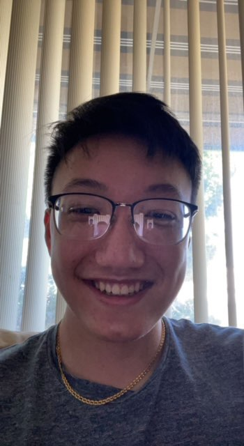

Alex Hsieh
CS@UCR
About Me
Hi, I'm Alex Hsieh. I'm a 3rd Year Computer Science Major at the University of California, Riverside! My hobbies
include coding, watching media, and playing popular multi-player computer games.
Work Experience
- Exodus Studios LLC (Jun. 2020 -- Aug. 2021)
System Administrator
- Worked directly with the CEO of this startup to focus on server development within existing sandbox
games by creating and managing the server resulting in \$10K of sales in 2 months.
- Fundamental to formulating the company's game vision, goals, and objectives by working with 6
contractors (graphic design, software design, manager) to develop administration skills.
- Managed and Administrated over the system and the social presence of the game with Discord, turning it
into a 5K+ member community in 2 months by using a strategy of creating a centralized community hub and
establishing a game player base.
- Video Game Play Tester (Aug. 2021 -- Present)
Anthos Capital
- Worked directly with upcoming game developers in the earliest stages of their game projects to help
determine the quality and specific problems of the game.
- Consulted with other testers to provide detailed feedback to the developers.
- Worked flexibly with time and decision management as multiple companies with different occurring
schedules would approach and request testing.
- ARC Tutoring (September. 2022 -- Present)
University of California, Riverside
- Worked closely with students to better their education.
Education
- Gabrielino High School (2016-2020)
- University of California, Riverside (2020-Present)
Coursework
- Software Construction
- Machine Organization and Assembly
- Data Structures and Algorithms
- Discrete Structures
- Big Data Management
Skills
C++, Java, SQL
Projects
- Highlander Battleship
- Created a modified version of the traditional Battleship game in C++ from the ground up.
- Utilized UML diagrams to aid in the design of the the program.
- Implemented multiple design patterns to ensure the abstraction of UI elements.
Socials
Linkedin
Github
Email
Instagram
Resume